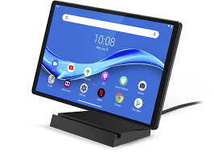
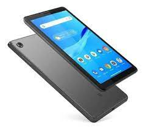
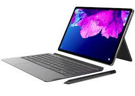
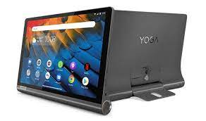
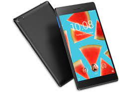
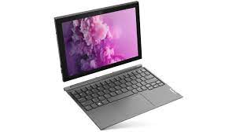

Lenovo M10 FHD Plus
Este modelo de la marca china cuenta con una gran pantalla de 10.3 pulgadas,
con panel LED IPS para ofrecer una buena calidad de imagen y resolución FullHD
(1920×1200 px). Con ella podrás leer, ver series y películas, o jugar sin forzar
demasiado la vista. Un buen acabado, peso ligero, y buena relación calidad-percio
son otro de los grandes atractivos por las que la deberías tener en cuenta si buscas
una tablet de diez pulgadas.
En cuanto a su interior, también está muy bien equipada, con un SoC Mediatek Helio P22T
para mover Android y las demás apps con soltura. También incluye 4 GB de memoria RAM,
64 GB de almacenamiento interno tipo flash, posibilidad de ampliar mediante tarjetas
de memoria SD hasta los 256 GB, y una batería de 7000 mAh, que es uno de sus puntos más
fuertes, logrando una gran autonomía.
|

Lenovo Tab M8
Si deseas algo más compacto, puedes optar por esta tablet Lenovo con pantalla de 8
pulgadas y resolución HD. Su panel sigue usando la tecnología LED IPS, lo que garantiza
unas buenas prestaciones en cuanto a color y brillo. Al tener un tamaño reducido y peso
ligero, resulta un tablet muy versátil para llevar de viaje y que te acompañe siempre a donde vayas.
Incluye un hardware bastante modesto, pero suficiente para la mayoría, y más
teniendo en cuenta que tiene un precio bastante bajo. Su chip es un Mediatek A22,
acompañado de 2GB de RAM, almacenamiento interno de 32 GB, ranuras para tarjetas de memoria microSD,
cámara trasera de 13 MP, y batería de 4800 mAh, que dado el tamaño de pantalla y
el hardware que incluye puede dar una buena autonomía.
|

Lenovo Tab P11
Este modelo es otra tablet económica de Lenovo. Pero no te dejes engañar,
esconde prestaciones de gama alta y la puedes conseguir por menos de trescientos euros.
Su pantalla es de 11 pulgadas, con un panel IPS y una resolución de 2000×1200 px,
además de brillo de hasta 400 nits, lo que son características realmente sorprendentes para el precio que tiene.
En cuanto al resto de hardware, incluye un potente chip Qualcomm Snapdragon 662,
4 GB de memoria RAM, 128 GB de almacenamiento interno, y posibilidad de ampliarlo
hasta 1 TB mediante tarjetas microSD. Su autonomía también es realmente destacable,
y usa una versión muy actual de Android, la 10, y es actualizable.
|

Lenovo Yoga Smart Tab
Es uno de esos modelos que merece especial atención. Esta tablet es más que una simple tablet,
se trata de un dispositivo 2 en 1. Por un lado puede funcionar como una tableta cualquiera,
pero también tiene un soporte para posarla sobre una mesa y que actúe como si fuese un altavoz
inteligente gracias al asistente virtual Google Assistant. Es decir, podrás tenerla en casa y
consultarle cosas o pedirle que realice funciones mediante comandos de voz, que interactúe
con otros dispositivos del hogar inteligente, etc. Su pantalla es de 10.1″ con panel LED
IPS y resolución FullHD (1920×1200 px). Incluye un poderoso chip de 8 núcleos de procesamiento,
4 GB de memoria RAM, 64 GB de almacenamiento interno, batería para ofrecer hasta 10 horas de
preproducción de vídeo u 11 horas de navegación, cámara trasera de 8MP y cámara frontal de 5MP.
|

Lenovo Tab 7
Otro de los modelos más vendidos es este tablet de 7 pulgadas.
Una pantalla más reducida que puede ser ideal para los que quieran algo más compacto
y ligero, o para los pequeños de la casa. Su panel usa tecnología IPS, y
cuenta con una buena resolución y calidad de imagen. En cuanto a la batería,
es una de Li-Ion con capacidad de 3450 mAh, que combinado con un panel reducido
y un hardware modesto hacen que se pueda usar horas y horas sin interrupciones.
Viene con un procesador Mediatek que puede ejecutar las apps de forma fluida,
con 1 GB de memoria RAM y 16 GB de almacenamiento interno.
Unas especificaciones para los que necesitan algo de gama baja y low-cost.
|

Lenovo Ideapad Duet 3i
Este otro modelo Lenovo es otro de esos productos especiales, como la Smart Tab.
También se trata de un convertible 2 en 1, es decir, un dispositivo que puede hacer
las veces de portátil con su teclado o de tablet con su pantalla táctil. Eso lo
transforma en una elección inteligente para trabajar o para estudiar. Además,
es interesante su sistema operativo, ya que no tiene Android, sino que viene equipada
con Windows 10. Esto te da la opción de poder instalar todo el software que puedes usar
en tu PC. Su pantalla es de 10.3 pulgadas, con resolución FullHD y panel IPS.
En su interior también esconde un hardware que se asemeja más al de un portátil
que al de un tablet, con un procesador Intel Celeron, 4 GB de memoria RAM DDR,
64 GB de almacenamiento interno tipo flash, y una batería que podría durar hasta 10 horas de autonomía.
|